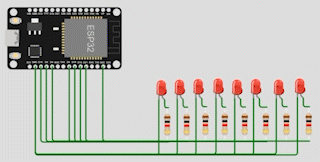

Arduino Programming Problems for class on 2022-09-09
Problems overview
Problem 1
- Write Arduino C/C++ programs that implement the following LED changing patterns (A, B, C, D).
- Use the Wokwi Simulator first to test your code and then verify the correctness using real hardware.
Problem 2
- Reimplement LED changing patterns A and B using the Pin C++ class.
Problem 1.)
- Write Arduino C/C++ programs that implement the following LED changing patterns (A, B, C, D).
- Use the Wokwi Simulator first to test your code and then verify the correctness using real hardware.
Led changing pattern A
<<<To the Simulation>>>
Board that I use
- Arduino NANO
Step 1.) Initially, only one LED (at index=0) is ON, and the rest of the LEDs are OFF.
- In this step we have to make sure that only the first led is on and other are off by using this code in my setup() function.
void setup() {
Serial.begin(115200);
for ( int i=0; i < num_led; i++ ) {
pinMode( led_pin[i], OUTPUT );
digitalWrite( led_pin[i], (i==0) ? HIGH : LOW );
}
}
Step 2.) The position of the ON LED should be moved to the next in a circular manner in a fixed time interval and then repeat.
- This step we will move to loop() function using the for loop to turn on and turn off each led one by one, my code look like this.
void loop() {
for (int i=0;i<num_led;i++){
digitalWrite(led_pin[i], HIGH);
delay(500);
digitalWrite(led_pin[i], LOW);
}
}
Pattern A Result
Led changing pattern B
<<<To the Simulation>>>
Board that I use
- Arduino NANO
Step 1.) Initially all leds are off.
- In this step we have to make sure that all leds are off by using this code in my setup function.
void setup() {
Serial.begin(115200);
for (int i=0;i<num_led;i++){
pinMode(led_pin[i], OUTPUT);
digitalWrite(led_pin[i], LOW);
}
}
Step 2.) Turn on the LEDs one by one with a time delay, starting at index=0 until all LEDs are ON. When all leds are on, turn off LEDs one by one starting from index n-1(the last one that turned on).
- We will move to loop() function to turn led on one by one using for loop.
- When all LEDs are on turn off LEDs one by one starting from index n-1 by using another for loop.
void loop() {
//turn led on one by one
for (int i = 0;i<num_led;i++){
digitalWrite(led_pin[i], HIGH);
delay(500);
}
//when all leds are on turn off one by one
//starting from index n-1
for (int n = num_led-1;n>=0;n--){
digitalWrite(led_pin[n], LOW);
delay(500);
}
delay(500);
}
Pattern B Result
Led changing pattern C
<<<To the Simulation>>>
Board that I use
- Arduino NANO
Before we start
Since in this pattern is relate with PWM or Pulse Width Modulation, in order to varying brightnesses of LEDs. And in Arduino NANO we have 6 PWM supported pins such as 3,5,6,9,10,11.
Source: https://www.arduino.cc/reference/en/language/functions/analog-io/analogwrite/
Step 1.) Initially all LEDs are off
- Just like the last pattern we initially turn off all LEDs in the setup() function.
void setup() {
// put your setup code here, to run once:
Serial.begin(115200);
for (int i=0;i<num_leds;i++){
pinMode(led_pins[i], OUTPUT);
digitalWrite(led_pins[i], LOW);
}
}
Step 2.) Turn on the first LED by increasing the duty cycle of the PWM signal driving the LED, until the LED is fully ON. Repeat this until All LEDs are fully on.
- In order to increasing the duty cycle of the PWM signal, I use
analogWrite(PIN,value)which as you can see it have two parameters. The first parameter "pin" is the arduino pin to write in and "value" is the duty cycle: between 0 (always off) and 255 (always on).- I use nested for loop which the outer loop is for specify the pin index and the inner loop is for specify the duty cycle value.
- I use two nested for loops as shown below. The first one is to turn on the LEDs one by one, and the second one is to turn off LEDs one by one after all LEDs are fully on.
void loop() {
// put your main code here, to run repeatedly:
int timedelay = 5;
for (int j = 0;j<num_leds;j++){
for (int i=0;i<255;i++){
analogWrite(led_pins[j],i);
delay(timedelay);
}
}
for (int j = 0;j<num_leds;j++){
for (int i=255;i>=0;i--){
analogWrite(led_pins[j],i);
delay(timedelay);
}
}
delay(1000);
}
Pattern C Result
Led changing pattern D
<<<To the Simulation>>>
Board I use
- ESP32
Before we start
In this pattern we have to use 8 PWM pins, But arduino NANO have only 6 PWM supported pins. So, I have to chage to ESP32 which has a LED PWM controller with 16 independent channels (from 0 to 15) that can be configured to generate PWM signals with different properties.
Step 1.) Initially, all LEDs are OFF.
- Just like the last pattern we initially turn off all LEDs in the setup() function.
- Since I want to use PWM on ESP32, so I have to set the PWM signal frequency for an LED, I also need to set the signal’s duty cycle resolution: I have resolutions from 1 to 16 bits. I’ll use 8-bit resolution, which means I can control the LED brightness using a value from 0 to 255. By using
ledcSetup(LED_PIN,freq,resolution).
void setup() {
Serial.begin(115200);
for ( int i=0; i<num_leds; i++ ) {
ledcSetup(i, 5000, 8);
}
}
Step 2.) Turn on the first 4 LEDs using PWM signals, each with different duty cycles (e.g. 100%, 75%, 25%, 0.39%), and the rest of the LEDs are OFF.
- I'll need to specify to which GPIO or GPIOs the signal will appear upon. For that I have to use
ledcAttachPin(GPIO, channel). This function accepts two arguments. The first is the GPIO that will output the signal, and the second is the channel that will generate the signal.- To turn on a led with dutycycle value we have to use
ledcWrite(pin,value)which accepts two parameter, pin is LED oin that you want to assign duty-cycle value to and value is of course a dutycycle value.- Finally, we use
ledcDetachPin(GPIO)to detach pin from a channel in order to specify it again with a new channel vialedcAttachPinthrough the loop.
void loop() {
for (int j = 0;j<num_leds;j++){
if(leda==num_leds){
leda = 0;
}
if(ledb==num_leds){
ledb = 0;
}
if(ledc==num_leds){
ledc = 0;
}
if(ledd==num_leds){
ledd = 0;
}
ledcAttachPin(led_pins[leda], leda);
ledcWrite(leda,255); //100%
ledcAttachPin(led_pins[ledb], ledb);
ledcWrite(ledb,191.25); //75%
ledcAttachPin(led_pins[ledc], ledc);
ledcWrite(ledc,127.5); //50%
ledcAttachPin(led_pins[ledd], ledd);
ledcWrite(ledd,1); //25%
delay(2000);
ledcDetachPin(led_pins[leda]);
ledcDetachPin(led_pins[ledb]);
ledcDetachPin(led_pins[ledc]);
ledcDetachPin(led_pins[ledd]);
leda++;ledb++;ledc++;ledd++;
}
}
Pattern D Result

Promblem 2.)
- Reimplement LED changing patterns A and B using the Pin C++ class.